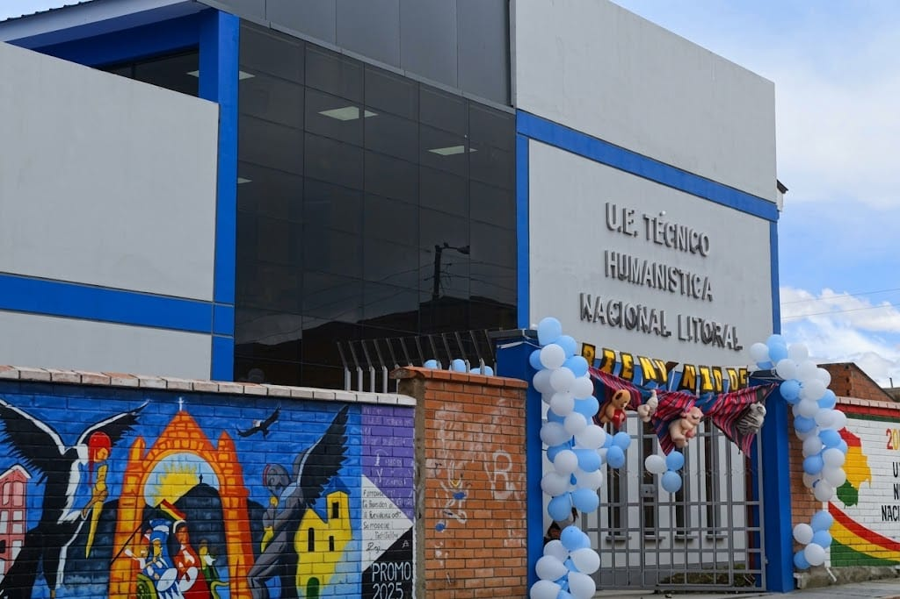

Conoce la importancia de la educación, los centros
educativos y las oportunidades de aprendizaje para
los niños y jóvenes del municipio de Colquencha.
La educación en nuestra comunidad
La educación es fundamental para el desarrollo de
Colquencha, porque permite adquirir conocimientos,
desarrollar habilidades y construir mejores
oportunidades para el futuro.
Las unidades educativas cumplen un papel importante
en la formación de niños y jóvenes, promoviendo
valores, responsabilidad, respeto y participación
en la comunidad.
Niveles educativos
Educación primaria
"UNIDAD EDUCATIVA CENTRAL COLQUENCHA"
Permite fortalecer la lectura, escritura,
matemáticas y otros conocimientos básicos
necesarios para la formación escolar.
Educación primaria
"UNIDAD EDUCATIVA PEDRO DOMINGO MURILLO"
Permite fortalecer la lectura, escritura,
matemáticas y otros conocimientos básicos
necesarios para la formación escolar.
Promueve el aprendizaje y la formación
de los estudiantes, fortaleciendo sus
conocimientos y valores.

Educación secundaria
"U.E. TEC. HUM. NACIONAL LITORAL"
Prepara a los estudiantes para continuar
sus estudios superiores y desarrollar
capacidades para su vida profesional.
Unidades educativas
Las unidades educativas son espacios de enseñanza
y aprendizaje donde estudiantes y docentes trabajan
para alcanzar objetivos educativos.
En esta sección puedes conocer las unidades
educativas de Colquencha mediante sus fotografías
y la información disponible.
Importancia de estudiar
Valores y convivencia
La escuela fomenta el respeto, la solidaridad,
la responsabilidad y el trabajo en equipo.
Oportunidades
La formación educativa permite prepararse
para nuevos retos académicos y laborales.
Educación para un mejor futuro
Apoyar la educación es contribuir al crecimiento
de Colquencha. La participación de estudiantes,
docentes, familias y comunidad es importante para
construir mejores oportunidades para las nuevas
generaciones.